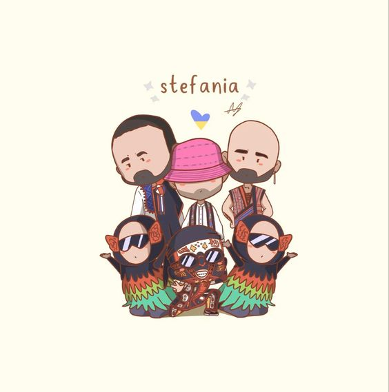

About
- 
-
Kalush Orchestra - це український етно-джазовий колектив, створений у 2009 році в місті Калуш, Івано-Франківської області. У своїй творчості гурт поєднує традиційну українську музику з джазом, фанком, роком та електронікою. У складі гурту - духові, струнні та ритм-секція, а також вокалістка. Kalush Orchestra активно концертує як в Україні, так і за її межами, і є одним з яскравих представників сучасної української музики.
Music
-
Stefania
Сонячна
-
Батьківщина
In the shadows of Ukraine